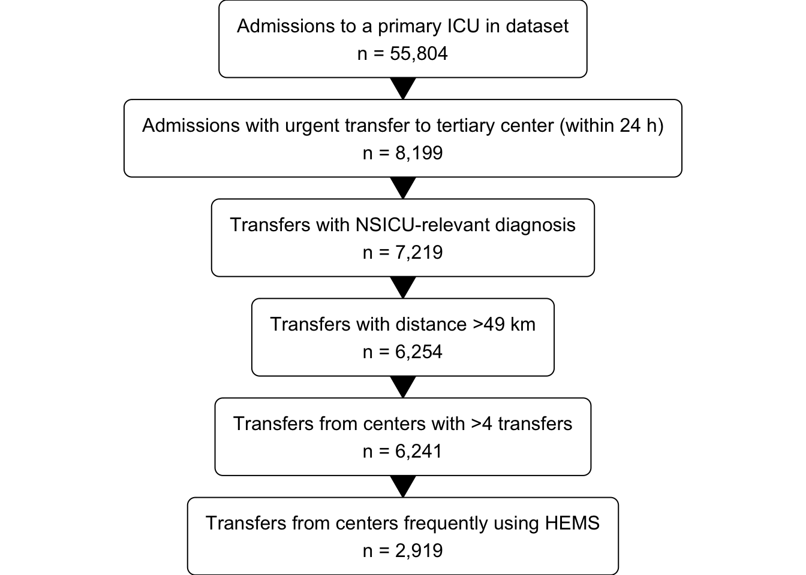
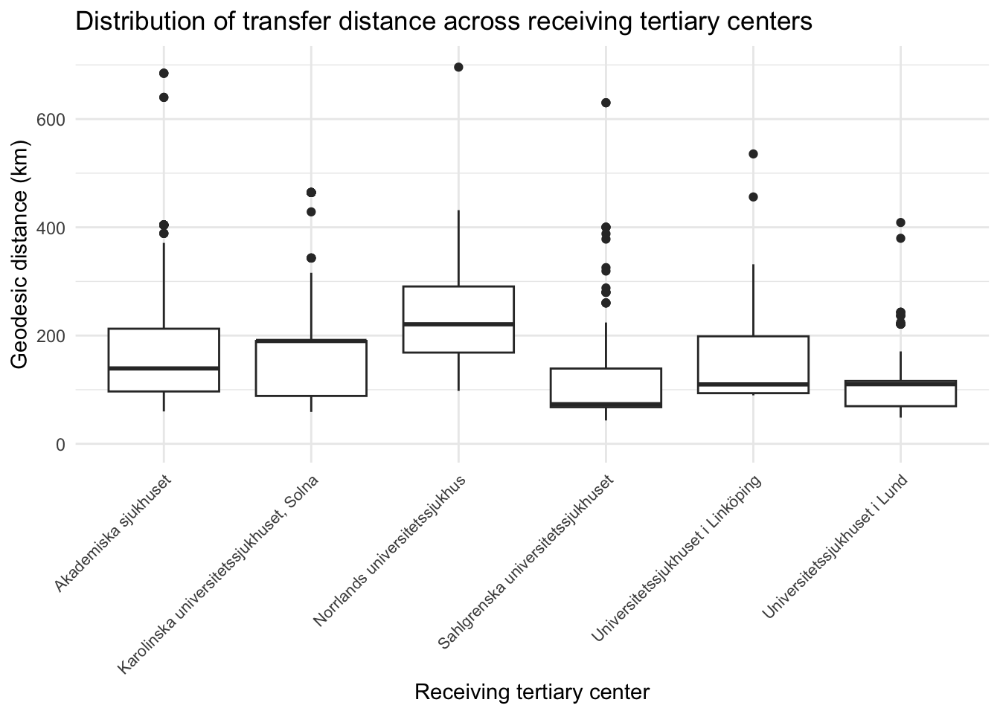
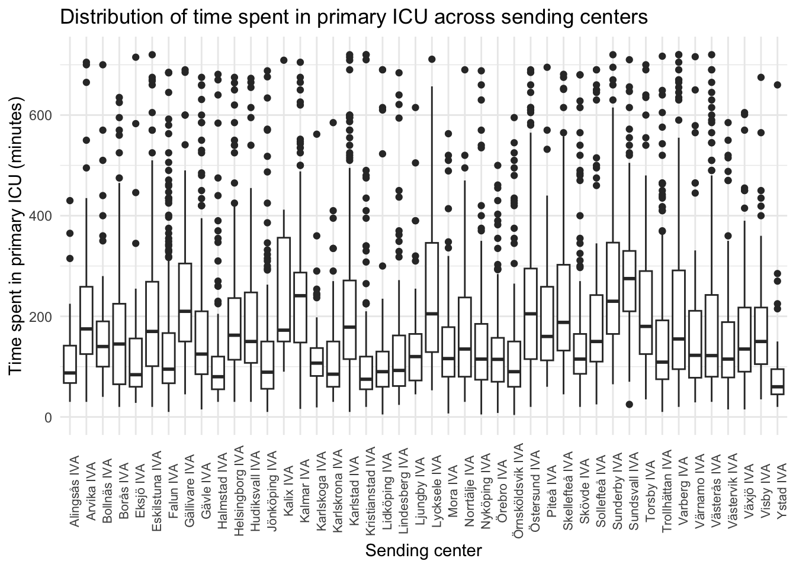
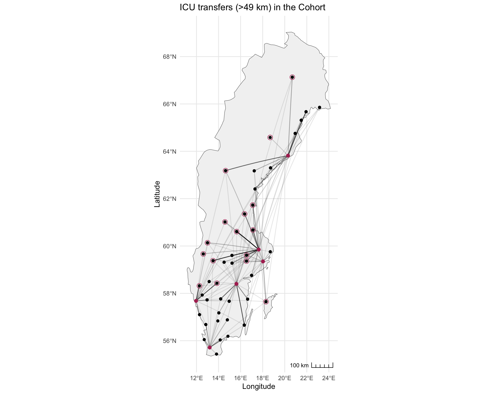

Descriptive analysis of the cohort of transferred ICU patients
1 Introduction
This markdown contains a summary of the transferred cohort prior to further analysis.
2 Patient selection
First, we’ll select all admissions (from the SIR database) to an ICU within hospitals lacking comprehensive neurosurgical and neurointensivist services (i.e. all but the six tertiary centers).
Next, we’ll pinpoint transfers by examining admissions (from the PAR dataset) to tertiary centers within a ±1 day window of the primary ICU discharge. The reason for allowing admission to a tertiary center on the day before primary ICU discharge, is to capture patients with measurement error in discharge times. (It can however be argued that 0-1 days is a better timeframe.) We’ll focus exclusively on transfers occurring within 24 hours of the primary ICU admission, as these are presumed to be urgent. In cases of multiple primary ICU admissions (eg. readmissions) or tertiary center admissions (eg. admissions to different departments at the tertiary center) within the timeframe, we’ll retain only the last primary ICU admission and the first tertiary center admission. If a patient has multiple transfers, only the first will be considered.
Third, the diagnosis will be inferred from the discharge ICD-10 codes at the tertiary center. A set of NSICU-relevant diagnosis will be probed for. Patients not fulfilling criteria for such a diagnosis will be discarded.
Finally, the cohort is reduced to transfers between hospitals that are > 49 km apart by road. Travelling > 49 km by road will likely mean that at least 60 minutes is spent in transfers outside of ICUs, meaning that the exposure to transfer complications is larger. These longer transfers are more likely to be conducted by HEMS, where weather conditions become a critical factor.”
A subgroup of patients transferred from hospitals frequently using HEMS for transfers to tertiary centers is defined for some further analysis. The exact set of hospitals defining this cohort is subject to change. I’m mainly uncertain if Örebro, Lindesberg, Karlskoga and Nyköping should be included. Adding these hospitals would add another 400 patients.
Code
### SELECT * FROM PRICU_ADMISSIONS
pricu <- boxGrob(glue("Admissions to a primary ICU in dataset",
"n = {pop}",
pop = txtInt(55804),
.sep = "\n"))
### SELECT * FROM TRANSFERS
transfer <- boxGrob(glue("Admissions with urgent transfer to tertiary center (within 24 h)",
"n = {pop}",
pop = txtInt(8199),
.sep = "\n"))
### SELECT * FROM DESCRIPTIVE
transfer_nsicu <- boxGrob(glue("Transfers with NSICU-relevant diagnosis",
"n = {incl}",
incl = txtInt(7219),
.sep = "\n"))
### Filter on road distance > 49 km
included_long <- boxGrob(glue("Transfers with distance >49 km",
"n = {incl}",
incl = txtInt(6254),
.sep = "\n"))
### Filter on
included_long_ex_small <- boxGrob(glue("Transfers from centers with >4 transfers",
"n = {incl}",
incl = txtInt(6241),
.sep = "\n"))
###
included_long_ex_small_ff <- boxGrob(glue("Transfers from centers frequently using HEMS",
"n = {incl}",
incl = txtInt(2919),
.sep = "\n"))
grid.newpage()
boxes <- spreadVertical(pricu,
transfer = transfer,
transfer_nsicu = transfer_nsicu,
included_long = included_long,
included_long_ex_small = included_long_ex_small,
included_long_ex_small_ff = included_long_ex_small_ff)
for (i in 1:(length(boxes) - 1)) {
connectGrob(boxes[[i]], boxes[[i + 1]], type = "vert") %>%
print
}
boxes
3 Data preparation
The SIR and PAR tables are queried using a 800+ line SQLite query. The dataframe is merged with data on coordinates for hospitals and distances between hospitals. The geographical data is stored in separate csv files in the data folder.
Code
## Query the data
# Define paths to the database and SQL query
db_path <- "/Users/JO/PhD/neurocritical-transfers/data/db.sqlite"
query_sql_path <- "/Users/JO/PhD/neurocritical-transfers/notes/final-analysis/0-database-query/primary-based-transfer-query.sql"
sql_query <- paste(readLines(query_sql_path), collapse = "\n")
# Connect, query and close connection to the SQLite database
con <- dbConnect(SQLite(), dbname = db_path)
q <- dbGetQuery(con, sql_query)
dbDisconnect(con)
## Next a few steps of data cleaning/transformation
# Make tertiary_center_id a double, else all goes to shit
q$tertiary_center_id <- as.double(q$tertiary_center_id)
# Remap hospital code for receiving hospital to proper names and add coordinates
tertiary_center_name_map <- read_delim("/Users/JO/PhD/neurocritical-transfers/data/tertiary-names-with-coordinates.csv", delim=";", col_select= c("tertiary_center_id", "tertiary_center_name", "Latitude", "Longitude"), show_col_types = FALSE)
d_with_tertiary_names <- left_join(x=q, y=tertiary_center_name_map, by = "tertiary_center_id")
# Rename end coordinates columns properly
d_with_tertiary_names <- d_with_tertiary_names %>% rename("end_latitude" = "Latitude", "end_longitude" = "Longitude")
# Get properly formatted pricu names and add coordinates
icu_mapping_with_coordinates <- read_delim("/Users/JO/PhD/neurocritical-transfers/data/icu-mapping-with-coordinates.csv", delim=";", col_select= c("sir_icu_name", "formatted_icu_name", "Latitude", "Longitude"), show_col_types = FALSE)
d_with_all_names <- left_join(x=d_with_tertiary_names, y=icu_mapping_with_coordinates, by="sir_icu_name")
# Rename start coordinates colmns properly
d_with_all_names <- d_with_all_names %>% rename("start_latitude" = "Latitude", "start_longitude" = "Longitude")
## Assign geodesic and road distance for each transfer
# Load matrices of distances
g <- read_delim("/Users/JO/PhD/neurocritical-transfers/data/geodesic_distance.csv", show_col_types = FALSE)
r <- read_delim("/Users/JO/PhD/neurocritical-transfers/data/road_distance.csv", show_col_types = FALSE)
# Populate the dataframe
distances_geodesic <- numeric(nrow(d_with_all_names))
distances_road <- numeric(nrow(d_with_all_names))
# Loop through each row of the dataframe
for (i in 1:nrow(d_with_all_names)) {
# Get the tertiary_center_name and formatted_icu_name for the current row
tertiary_center <- d_with_all_names$tertiary_center_name[i]
sending_icu <- d_with_all_names$formatted_icu_name[i]
# Find the corresponding row and column index in the geo_distance matrix
reciever <- which(colnames(g) == tertiary_center)
# Get the distance from the geo_distance matrix
distance_g <- g %>%
filter(formatted_icu_name == sending_icu) %>%
pull(tertiary_center)
distance_r <- r %>%
filter(formatted_icu_name == sending_icu) %>%
pull(tertiary_center)
# Assign the distance to the distances vector
distances_geodesic[i] <- as.double(distance_g)
distances_road[i] <- distance_r
}
d_with_all_names$distance_geodesic <- unlist(distances_geodesic)
d_with_all_names$distance_road <- unlist(distances_road)
# Done
d <- d_with_all_names
d_filtered <- d %>% filter(distance_road > 49) %>%
group_by(sir_icu_name) %>%
filter(n() >= 5) %>%
ungroup()
d <- d_filtered
tertiary_centers <- c("Karolinska universitetssjukhuset, Solna", "Sahlgrenska universitetssjukhuset", "Akademiska sjukhuset", "Universitetssjukhuset i Linköping", "Norrlands universitetssjukhus", "Universitetssjukhuset i Lund")
alla_iva <- c("Arvika IVA", "Bollnäs IVA", "Borås IVA", "Eskilstuna IVA", "Falun IVA", "Gällivare IVA", "Gävle IVA", "Hudiksvall IVA", "Jönköping IVA", "Kalix IVA", "Kalmar IVA", "Karlskoga IVA", "Karlskrona IVA", "Karlstad IVA", "Kristianstad IVA", "Lindesberg IVA", "Lycksele IVA", "Mora IVA", "Norrtälje IVA", "Örebro IVA", "Örnsköldsvik IVA", "Östersund IVA", "Piteå IVA", "Skellefteå IVA", "Skövde IVA", "Sollefteå IVA", "Sunderby IVA", "Sundsvall IVA", "Torsby IVA", "Trollhättan IVA", "Varberg IVA", "Värnamo IVA", "Västerås IVA", "Västervik IVA", "Växjö IVA", "Visby IVA", "Ystad IVA")
helipad <- c("Arvika IVA", "Bollnäs IVA", "Borås IVA", "Eskilstuna IVA", "Falun IVA", "Gällivare IVA", "Gävle IVA", "Hudiksvall IVA", "Jönköping IVA", "Karlskrona IVA", "Karlstad IVA", "Kristianstad IVA", "Mora IVA", "Norrtälje IVA", "Örebro IVA", "Skellefteå IVA", "Skövde IVA", "Sunderby IVA", "Sundsvall IVA", "Torsby IVA", "Trollhättan IVA", "Varberg IVA", "Värnamo IVA", "Västerås IVA", "Visby IVA")
frequent_flyer <- c("Arvika IVA", "Bollnäs IVA", "Eskilstuna IVA", "Falun IVA", "Gällivare IVA", "Gävle IVA", "Hudiksvall IVA", "Karlstad IVA", "Lycksele IVA", "Mora IVA", "Östersund IVA", "Skövde IVA", "Torsby IVA", "Trollhättan IVA", "Västerås IVA", "Visby IVA")
d_frequent_flyer <- d %>% filter(formatted_icu_name %in% frequent_flyer)4 Summary statistics
Two summary tables will follow, the first is an unredacted version. The second table is pruned, and likely closer to what is meaningful to show to the public. In summary, the cohort is quite “average”. The median age is 61 years, slightly above the meadian age in general patients entered into SIR. The avg. 30-day mortality is 15%, about the same as the average patient in SIR.
Some diagnosis codes need extra explanation. TBI = These are patients admitted to a tertiary center with a primary ICD10 dx (at discharge) of TBI or with a primary diagnosis of skull/base-of-skull frx/cervical spine frx AND a secondary TBI dx. However, patients with a primary diagnosis of trauma to other parts of the body and a secondary diagnosis of TBI are not included. SDH = These are patients with a primary dx of non-traumatic SDH (I62) and no secondary diagnosis of TBI (S06). Many of these patients turn out to have a KVÅ-code AAD05 (evacuation of acute SDH) or AAD10 (evacuation of chronic SDH). CFX = Isolated cervical spine fracture. These are patients with a primary dx indicative of a C-spine fracture and without an associated secondary dx of a TBI. If there is an associated TBI, the patient will be categorized as a TBI patient instead. CVT = Cerebral venous thrombosis AIS = Acute ischemic stroke TUM = Intracranial tumour SEP = Status epilepticus or epilepsy, not otherwise specified HC = Hydrocephalus, not otherwise specified
Code
theme_gtsummary_compact()
d %>%
tbl_summary(include=c(age,
sex_female,
admission_weight,
BMI,
DNR,
DX,
tertiary_center_name,
formatted_icu_name,
sir_hospital_type,
icu_admission_year,
distance_geodesic,
distance_road,
sir_total_time,
icu_admission_afterhours,
sir_consciousness_level,
SAPS_GCS,
SAPS_RLS85,
SAPS_obtunded,
SAPS_unconcious,
overall_worst_GCS,
overall_worst_RLS85,
overall_obtunded,
overall_unconcious,
SAPS_AMV,
any_AMV,
SAPS_PFI,
SAPS_hypoxia,
ARDS,
respiratory_instability_markers,
SAPS_min_SBP,
SAPS_hypotension,
SAPS_max_HR,
SOFA_high_norepi_dose,
SAPS_hypothermia,
hemodynamic_instability_markers,
d7,
d30,
d365),
label = list(age ~ "Age, years",
sex_female ~ "Female",
admission_weight ~ "Weight, kg",
BMI ~ "BMI, kg/m²",
DNR ~ "DNR order",
DX ~ "Inferred diagnosis",
tertiary_center_name ~ "Receiving hospital",
formatted_icu_name ~ "Sending ICU",
sir_hospital_type ~ "Sending hospital type",
icu_admission_year ~ "Admission Year",
distance_road ~ "Road distance, km",
distance_geodesic ~ "Geodesic distance, km",
sir_total_time ~ "Time in primary ICU, minutes",
icu_admission_afterhours ~ "After-hours admission (After 3 p.m., before 7 a.m OR Sat/Sun)",
sir_consciousness_level ~ "SIR SAPS consciousness level",
SAPS_GCS ~ "SAPS GCS",
SAPS_RLS85 ~ "SAPS RLS85",
SAPS_obtunded ~ "SAPS obtunded (not fully alert)",
SAPS_unconcious ~ "SAPS unconscious",
overall_worst_GCS ~ "Worst pre-transfer GCS",
overall_worst_RLS85 ~ "Worst pre-transfer RLS85",
overall_obtunded ~ "Pre-transfer obtunded (not fully alert)",
overall_unconcious ~ "Pre-transfer unconscious (GCS <9)",
SAPS_AMV ~ "SAPS Mechanical Ventilation",
any_AMV ~ "Pre-transfer Mechanical Ventilation",
SAPS_PFI ~ "SAPS PFI, kPa",
SAPS_hypoxia ~ "SAPS Hypoxemia (PAO2<8 kPa)",
ARDS ~ "SAPS PFI <26.6 kPa",
respiratory_instability_markers ~ "Markers of respiratory instability",
SAPS_min_SBP ~ "SAPS min SBP, mmHg",
SAPS_hypotension ~ "SAPS hypotension <90 mmHg",
SAPS_max_HR ~ "SAPS max HR, bpm",
SOFA_high_norepi_dose ~ "SOFA norepinephrine >0.1 µg/kg/min",
hemodynamic_instability_markers ~ "Markers of hemodynamic instability",
SAPS_hypothermia ~ "SAPS hypothermia (<35°C)",
d7 ~ "7-day mortality",
d30 ~ "30-day mortality",
d365 ~ "90-day mortality"
),
missing="always",
missing_text="Missing"
) %>%
add_n()| Characteristic | N | N = 6,2411 |
|---|---|---|
| Age, years | 6,241 | 61 (50, 70) |
| Missing | 0 | |
| Female | 6,241 | 2,504 (40%) |
| Missing | 0 | |
| Weight, kg | 931 | 78 (69, 89) |
| Missing | 5,310 | |
| BMI, kg/m² | 813 | 25.4 (23.4, 28.2) |
| Missing | 5,428 | |
| DNR order | 6,241 | 55 (0.9%) |
| Missing | 0 | |
| Inferred diagnosis | 6,241 | |
| ABM | 247 (4.0%) | |
| AIS | 515 (8.3%) | |
| ASAH | 1,610 (26%) | |
| AVM | 21 (0.3%) | |
| CFX | 261 (4.2%) | |
| CVT | 23 (0.4%) | |
| ENC | 15 (0.2%) | |
| HC | 38 (0.6%) | |
| ICH | 1,127 (18%) | |
| SDH | 361 (5.8%) | |
| SEP | 15 (0.2%) | |
| TBI | 1,933 (31%) | |
| TUM | 75 (1.2%) | |
| Missing | 0 | |
| Receiving hospital | 6,241 | |
| Akademiska sjukhuset | 2,216 (36%) | |
| Karolinska universitetssjukhuset, Solna | 315 (5.0%) | |
| Norrlands universitetssjukhus | 1,279 (20%) | |
| Sahlgrenska universitetssjukhuset | 914 (15%) | |
| Universitetssjukhuset i Linköping | 811 (13%) | |
| Universitetssjukhuset i Lund | 706 (11%) | |
| Missing | 0 | |
| Sending ICU | 6,241 | |
| Alingsås IVA | 44 (0.7%) | |
| Arvika IVA | 71 (1.1%) | |
| Bollnäs IVA | 98 (1.6%) | |
| Borås IVA | 109 (1.7%) | |
| Eksjö IVA | 65 (1.0%) | |
| Eskilstuna IVA | 160 (2.6%) | |
| Falun IVA | 424 (6.8%) | |
| Gällivare IVA | 106 (1.7%) | |
| Gävle IVA | 239 (3.8%) | |
| Halmstad IVA | 137 (2.2%) | |
| Helsingborg IVA | 141 (2.3%) | |
| Hudiksvall IVA | 132 (2.1%) | |
| Jönköping IVA | 213 (3.4%) | |
| Kalix IVA | 22 (0.4%) | |
| Kalmar IVA | 282 (4.5%) | |
| Karlskoga IVA | 83 (1.3%) | |
| Karlskrona IVA | 121 (1.9%) | |
| Karlstad IVA | 346 (5.5%) | |
| Kristianstad IVA | 127 (2.0%) | |
| Lidköping IVA | 94 (1.5%) | |
| Lindesberg IVA | 67 (1.1%) | |
| Ljungby IVA | 50 (0.8%) | |
| Lycksele IVA | 33 (0.5%) | |
| Mora IVA | 95 (1.5%) | |
| Norrtälje IVA | 49 (0.8%) | |
| Nyköping IVA | 132 (2.1%) | |
| Örebro IVA | 189 (3.0%) | |
| Örnsköldsvik IVA | 141 (2.3%) | |
| Östersund IVA | 262 (4.2%) | |
| Piteå IVA | 74 (1.2%) | |
| Skellefteå IVA | 124 (2.0%) | |
| Skövde IVA | 256 (4.1%) | |
| Sollefteå IVA | 98 (1.6%) | |
| Sunderby IVA | 290 (4.6%) | |
| Sundsvall IVA | 181 (2.9%) | |
| Torsby IVA | 87 (1.4%) | |
| Trollhättan IVA | 241 (3.9%) | |
| Varberg IVA | 150 (2.4%) | |
| Värnamo IVA | 71 (1.1%) | |
| Västerås IVA | 240 (3.8%) | |
| Västervik IVA | 156 (2.5%) | |
| Växjö IVA | 77 (1.2%) | |
| Visby IVA | 129 (2.1%) | |
| Ystad IVA | 35 (0.6%) | |
| Missing | 0 | |
| Sending hospital type | 6,241 | |
| Community Hospital | 2,077 (33%) | |
| Regional Hospital | 3,975 (64%) | |
| University Hospital | 189 (3.0%) | |
| Missing | 0 | |
| Admission Year | 6,241 | |
| 2010 | 498 (8.0%) | |
| 2011 | 532 (8.5%) | |
| 2012 | 534 (8.6%) | |
| 2013 | 584 (9.4%) | |
| 2014 | 509 (8.2%) | |
| 2015 | 532 (8.5%) | |
| 2016 | 471 (7.5%) | |
| 2017 | 452 (7.2%) | |
| 2018 | 485 (7.8%) | |
| 2019 | 535 (8.6%) | |
| 2020 | 452 (7.2%) | |
| 2021 | 436 (7.0%) | |
| 2022 | 221 (3.5%) | |
| Missing | 0 | |
| Geodesic distance, km | 6,241 | 139 (97, 212) |
| Missing | 0 | |
| Road distance, km | 6,241 | 173 (110, 263) |
| Missing | 0 | |
| Time in primary ICU, minutes | 6,241 | 150 (90, 280) |
| Missing | 0 | |
| After-hours admission (After 3 p.m., before 7 a.m OR Sat/Sun) | 6,241 | 4,768 (76%) |
| Missing | 0 | |
| SIR SAPS consciousness level | 6,075 | |
| I (GCS ≥13) | 2,811 (46%) | |
| II (GCS 7-12) | 1,791 (29%) | |
| III (GCS 6) | 476 (7.8%) | |
| IV (GCS 5) | 301 (5.0%) | |
| V (GCS ≤4) | 696 (11%) | |
| Missing | 166 | |
| SAPS GCS | 430 | 12.0 (7.0, 14.0) |
| Missing | 5,811 | |
| SAPS RLS85 | 5,708 | |
| 1 | 1,475 (26%) | |
| 2 | 1,151 (20%) | |
| 3 | 889 (16%) | |
| 4 | 810 (14%) | |
| 5 | 456 (8.0%) | |
| 6 | 288 (5.0%) | |
| 7 | 250 (4.4%) | |
| 8 | 389 (6.8%) | |
| Missing | 533 | |
| SAPS obtunded (not fully alert) | 6,075 | 4,516 (74%) |
| Missing | 166 | |
| SAPS unconscious | 6,075 | 2,314 (38%) |
| Missing | 166 | |
| Worst pre-transfer GCS | 432 | 12.0 (6.0, 14.0) |
| Missing | 5,809 | |
| Worst pre-transfer RLS85 | 5,709 | |
| 1 | 1,457 (26%) | |
| 2 | 1,152 (20%) | |
| 3 | 892 (16%) | |
| 4 | 814 (14%) | |
| 5 | 454 (8.0%) | |
| 6 | 290 (5.1%) | |
| 7 | 252 (4.4%) | |
| 8 | 398 (7.0%) | |
| Missing | 532 | |
| Pre-transfer obtunded (not fully alert) | 6,076 | 4,541 (75%) |
| Missing | 165 | |
| Pre-transfer unconscious (GCS <9) | 6,076 | 2,334 (38%) |
| Missing | 165 | |
| SAPS Mechanical Ventilation | 4,696 | 2,303 (49%) |
| Missing | 1,545 | |
| Pre-transfer Mechanical Ventilation | 6,241 | 3,332 (53%) |
| Missing | 0 | |
| SAPS PFI, kPa | 2,634 | 38 (27, 51) |
| Missing | 3,607 | |
| SAPS Hypoxemia (PAO2<8 kPa) | 4,802 | 152 (3.2%) |
| Missing | 1,439 | |
| SAPS PFI <26.6 kPa | 2,759 | 596 (22%) |
| Missing | 3,482 | |
| Markers of respiratory instability | 6,241 | 183 (2.9%) |
| Missing | 0 | |
| SAPS min SBP, mmHg | 5,945 | 132 (110, 160) |
| Missing | 296 | |
| SAPS hypotension <90 mmHg | 5,945 | 620 (10%) |
| Missing | 296 | |
| SAPS max HR, bpm | 5,904 | 85 (72, 100) |
| Missing | 337 | |
| SOFA norepinephrine >0.1 µg/kg/min | 6,241 | 59 (0.9%) |
| Missing | 0 | |
| SAPS hypothermia (<35°C) | 6,241 | 221 (3.5%) |
| Missing | 0 | |
| Markers of hemodynamic instability | 6,241 | 154 (2.5%) |
| Missing | 0 | |
| 7-day mortality | 6,241 | 550 (8.8%) |
| Missing | 0 | |
| 30-day mortality | 6,241 | 964 (15%) |
| Missing | 0 | |
| 90-day mortality | 6,241 | 1,421 (23%) |
| Missing | 0 | |
| 1 Median (IQR); n (%) | ||
4.1 A curated descriptive summary
Here is the abbreviated version.
Code
#
theme_gtsummary_compact()
d %>%
tbl_summary(include=c(age,
sex_female,
admission_weight,
BMI,
DNR,
DX,
tertiary_center_name,
formatted_icu_name,
sir_hospital_type,
icu_admission_year,
distance_road,
sir_total_time,
icu_admission_afterhours,
sir_consciousness_level,
SAPS_GCS,
SAPS_RLS85,
overall_obtunded,
overall_unconcious,
SAPS_AMV,
SAPS_hypoxia,
SAPS_hypotension,
SAPS_hypothermia,
d7,
d30,
d365),
label = list(age ~ "Age, years",
sex_female ~ "Female",
admission_weight ~ "Weight, kg",
BMI ~ "BMI, kg/m²",
DNR ~ "DNR order",
DX ~ "Inferred diagnosis",
tertiary_center_name ~ "Receiving hospital",
formatted_icu_name ~ "Sending ICU",
sir_hospital_type ~ "Sending hospital type",
icu_admission_year ~ "Admission Year",
distance_road ~ "Road distance, km",
sir_total_time ~ "Time in primary ICU, minutes",
icu_admission_afterhours ~ "After-hours admission (After 3 p.m., before 7 a.m OR Sat/Sun)",
sir_consciousness_level ~ "SIR SAPS consciousness level",
SAPS_GCS ~ "SAPS GCS",
SAPS_RLS85 ~ "SAPS RLS85",
overall_obtunded ~ "Pre-transfer obtunded (not fully alert)",
overall_unconcious ~ "Pre-transfer unconscious (GCS <9)",
SAPS_AMV ~ "SAPS Mechanical Ventilation",
SAPS_hypoxia ~ "SAPS Hypoxemia (PAO2<8 kPa)",
SAPS_hypotension ~ "SAPS hypotension <90 mmHg",
SAPS_hypothermia ~ "SAPS hypothermia (<35°C)",
d7 ~ "7-day mortality",
d30 ~ "30-day mortality",
d365 ~ "90-day mortality"
),
missing="always",
missing_text="Missing"
) %>%
add_n()| Characteristic | N | N = 6,2411 |
|---|---|---|
| Age, years | 6,241 | 61 (50, 70) |
| Missing | 0 | |
| Female | 6,241 | 2,504 (40%) |
| Missing | 0 | |
| Weight, kg | 931 | 78 (69, 89) |
| Missing | 5,310 | |
| BMI, kg/m² | 813 | 25.4 (23.4, 28.2) |
| Missing | 5,428 | |
| DNR order | 6,241 | 55 (0.9%) |
| Missing | 0 | |
| Inferred diagnosis | 6,241 | |
| ABM | 247 (4.0%) | |
| AIS | 515 (8.3%) | |
| ASAH | 1,610 (26%) | |
| AVM | 21 (0.3%) | |
| CFX | 261 (4.2%) | |
| CVT | 23 (0.4%) | |
| ENC | 15 (0.2%) | |
| HC | 38 (0.6%) | |
| ICH | 1,127 (18%) | |
| SDH | 361 (5.8%) | |
| SEP | 15 (0.2%) | |
| TBI | 1,933 (31%) | |
| TUM | 75 (1.2%) | |
| Missing | 0 | |
| Receiving hospital | 6,241 | |
| Akademiska sjukhuset | 2,216 (36%) | |
| Karolinska universitetssjukhuset, Solna | 315 (5.0%) | |
| Norrlands universitetssjukhus | 1,279 (20%) | |
| Sahlgrenska universitetssjukhuset | 914 (15%) | |
| Universitetssjukhuset i Linköping | 811 (13%) | |
| Universitetssjukhuset i Lund | 706 (11%) | |
| Missing | 0 | |
| Sending ICU | 6,241 | |
| Alingsås IVA | 44 (0.7%) | |
| Arvika IVA | 71 (1.1%) | |
| Bollnäs IVA | 98 (1.6%) | |
| Borås IVA | 109 (1.7%) | |
| Eksjö IVA | 65 (1.0%) | |
| Eskilstuna IVA | 160 (2.6%) | |
| Falun IVA | 424 (6.8%) | |
| Gällivare IVA | 106 (1.7%) | |
| Gävle IVA | 239 (3.8%) | |
| Halmstad IVA | 137 (2.2%) | |
| Helsingborg IVA | 141 (2.3%) | |
| Hudiksvall IVA | 132 (2.1%) | |
| Jönköping IVA | 213 (3.4%) | |
| Kalix IVA | 22 (0.4%) | |
| Kalmar IVA | 282 (4.5%) | |
| Karlskoga IVA | 83 (1.3%) | |
| Karlskrona IVA | 121 (1.9%) | |
| Karlstad IVA | 346 (5.5%) | |
| Kristianstad IVA | 127 (2.0%) | |
| Lidköping IVA | 94 (1.5%) | |
| Lindesberg IVA | 67 (1.1%) | |
| Ljungby IVA | 50 (0.8%) | |
| Lycksele IVA | 33 (0.5%) | |
| Mora IVA | 95 (1.5%) | |
| Norrtälje IVA | 49 (0.8%) | |
| Nyköping IVA | 132 (2.1%) | |
| Örebro IVA | 189 (3.0%) | |
| Örnsköldsvik IVA | 141 (2.3%) | |
| Östersund IVA | 262 (4.2%) | |
| Piteå IVA | 74 (1.2%) | |
| Skellefteå IVA | 124 (2.0%) | |
| Skövde IVA | 256 (4.1%) | |
| Sollefteå IVA | 98 (1.6%) | |
| Sunderby IVA | 290 (4.6%) | |
| Sundsvall IVA | 181 (2.9%) | |
| Torsby IVA | 87 (1.4%) | |
| Trollhättan IVA | 241 (3.9%) | |
| Varberg IVA | 150 (2.4%) | |
| Värnamo IVA | 71 (1.1%) | |
| Västerås IVA | 240 (3.8%) | |
| Västervik IVA | 156 (2.5%) | |
| Växjö IVA | 77 (1.2%) | |
| Visby IVA | 129 (2.1%) | |
| Ystad IVA | 35 (0.6%) | |
| Missing | 0 | |
| Sending hospital type | 6,241 | |
| Community Hospital | 2,077 (33%) | |
| Regional Hospital | 3,975 (64%) | |
| University Hospital | 189 (3.0%) | |
| Missing | 0 | |
| Admission Year | 6,241 | |
| 2010 | 498 (8.0%) | |
| 2011 | 532 (8.5%) | |
| 2012 | 534 (8.6%) | |
| 2013 | 584 (9.4%) | |
| 2014 | 509 (8.2%) | |
| 2015 | 532 (8.5%) | |
| 2016 | 471 (7.5%) | |
| 2017 | 452 (7.2%) | |
| 2018 | 485 (7.8%) | |
| 2019 | 535 (8.6%) | |
| 2020 | 452 (7.2%) | |
| 2021 | 436 (7.0%) | |
| 2022 | 221 (3.5%) | |
| Missing | 0 | |
| Road distance, km | 6,241 | 173 (110, 263) |
| Missing | 0 | |
| Time in primary ICU, minutes | 6,241 | 150 (90, 280) |
| Missing | 0 | |
| After-hours admission (After 3 p.m., before 7 a.m OR Sat/Sun) | 6,241 | 4,768 (76%) |
| Missing | 0 | |
| SIR SAPS consciousness level | 6,075 | |
| I (GCS ≥13) | 2,811 (46%) | |
| II (GCS 7-12) | 1,791 (29%) | |
| III (GCS 6) | 476 (7.8%) | |
| IV (GCS 5) | 301 (5.0%) | |
| V (GCS ≤4) | 696 (11%) | |
| Missing | 166 | |
| SAPS GCS | 430 | 12.0 (7.0, 14.0) |
| Missing | 5,811 | |
| SAPS RLS85 | 5,708 | |
| 1 | 1,475 (26%) | |
| 2 | 1,151 (20%) | |
| 3 | 889 (16%) | |
| 4 | 810 (14%) | |
| 5 | 456 (8.0%) | |
| 6 | 288 (5.0%) | |
| 7 | 250 (4.4%) | |
| 8 | 389 (6.8%) | |
| Missing | 533 | |
| Pre-transfer obtunded (not fully alert) | 6,076 | 4,541 (75%) |
| Missing | 165 | |
| Pre-transfer unconscious (GCS <9) | 6,076 | 2,334 (38%) |
| Missing | 165 | |
| SAPS Mechanical Ventilation | 4,696 | 2,303 (49%) |
| Missing | 1,545 | |
| SAPS Hypoxemia (PAO2<8 kPa) | 4,802 | 152 (3.2%) |
| Missing | 1,439 | |
| SAPS hypotension <90 mmHg | 5,945 | 620 (10%) |
| Missing | 296 | |
| SAPS hypothermia (<35°C) | 6,241 | 221 (3.5%) |
| Missing | 0 | |
| 7-day mortality | 6,241 | 550 (8.8%) |
| Missing | 0 | |
| 30-day mortality | 6,241 | 964 (15%) |
| Missing | 0 | |
| 90-day mortality | 6,241 | 1,421 (23%) |
| Missing | 0 | |
| 1 Median (IQR); n (%) | ||
4.2 Summary by diagnosis
Finally, let’s limit the summary to patients within the seven most common diagnosis.
Code
d %>%
filter(DX %in% c('TBI', 'ASAH', 'ICH', 'AIS', 'SDH', 'ABM', 'CFX')) %>%
select(DX, age, sex_female, icu_admission_afterhours, sir_total_time, sir_consciousness_level, overall_unconcious, overall_obtunded, SAPS_hypoxia, SAPS_hypotension, SAPS_hypothermia, d30) %>%
tbl_summary(by='DX', label = list(age ~ "Age, years",
sex_female ~ "Female",
icu_admission_afterhours ~ "After-hours admission (After 3 p.m., before 7 a.m OR Sat/Sun)",
sir_total_time ~ "Time in primary ICU, minutes",
sir_consciousness_level ~ "SIR SAPS consciousness level",
overall_obtunded ~ "Pre-transfer obtunded (not fully alert)",
overall_unconcious ~ "Pre-transfer unconscious (GCS <9)",
SAPS_hypoxia ~ "SAPS Hypoxemia (PAO2<8 kPa)",
SAPS_hypotension ~ "SAPS hypotension <90 mmHg",
SAPS_hypothermia ~ "SAPS hypothermia (<35°C)",
d30 ~ "30-day mortality"
),
missing_text="Missing"
) %>%
add_n()| Characteristic | N | ABM, N = 2471 | AIS, N = 5151 | ASAH, N = 1,6101 | CFX, N = 2611 | ICH, N = 1,1271 | SDH, N = 3611 | TBI, N = 1,9331 |
|---|---|---|---|---|---|---|---|---|
| Age, years | 6,054 | 60 (43, 68) | 64 (56, 73) | 59 (51, 68) | 63 (43, 73) | 61 (51, 68) | 70 (61, 77) | 61 (46, 72) |
| Female | 6,054 | 103 (42%) | 170 (33%) | 1,012 (63%) | 59 (23%) | 453 (40%) | 99 (27%) | 530 (27%) |
| After-hours admission (After 3 p.m., before 7 a.m OR Sat/Sun) | 6,054 | 187 (76%) | 357 (69%) | 1,207 (75%) | 222 (85%) | 854 (76%) | 261 (72%) | 1,534 (79%) |
| Time in primary ICU, minutes | 6,054 | 343 (205, 686) | 120 (75, 235) | 111 (72, 180) | 417 (190, 877) | 137 (85, 242) | 162 (87, 330) | 180 (105, 331) |
| SIR SAPS consciousness level | 5,897 | |||||||
| I (GCS ≥13) | 46 (19%) | 243 (48%) | 891 (57%) | 227 (88%) | 414 (38%) | 194 (55%) | 712 (38%) | |
| II (GCS 7-12) | 129 (54%) | 134 (27%) | 304 (19%) | 17 (6.6%) | 386 (35%) | 100 (28%) | 666 (36%) | |
| III (GCS 6) | 39 (16%) | 40 (8.0%) | 99 (6.3%) | 1 (0.4%) | 107 (9.8%) | 20 (5.7%) | 158 (8.4%) | |
| IV (GCS 5) | 11 (4.6%) | 29 (5.8%) | 86 (5.5%) | 1 (0.4%) | 52 (4.7%) | 7 (2.0%) | 108 (5.8%) | |
| V (GCS ≤4) | 14 (5.9%) | 57 (11%) | 195 (12%) | 11 (4.3%) | 137 (13%) | 30 (8.5%) | 232 (12%) | |
| Missing | 8 | 12 | 35 | 4 | 31 | 10 | 57 | |
| Pre-transfer unconscious (GCS <9) | 5,898 | 146 (61%) | 190 (38%) | 515 (33%) | 21 (8.2%) | 464 (42%) | 98 (28%) | 833 (44%) |
| Missing | 8 | 12 | 35 | 4 | 31 | 10 | 56 | |
| Pre-transfer obtunded (not fully alert) | 5,898 | 223 (93%) | 373 (74%) | 1,005 (64%) | 75 (29%) | 956 (87%) | 231 (66%) | 1,539 (82%) |
| Missing | 8 | 12 | 35 | 4 | 31 | 10 | 56 | |
| SAPS Hypoxemia (PAO2<8 kPa) | 4,671 | 11 (5.6%) | 8 (2.4%) | 45 (3.5%) | 6 (3.7%) | 19 (2.0%) | 10 (3.9%) | 49 (3.2%) |
| Missing | 51 | 182 | 331 | 99 | 195 | 106 | 419 | |
| SAPS hypotension <90 mmHg | 5,771 | 20 (8.5%) | 43 (8.8%) | 105 (6.8%) | 51 (20%) | 109 (10%) | 26 (7.6%) | 257 (14%) |
| Missing | 11 | 26 | 63 | 7 | 52 | 21 | 103 | |
| SAPS hypothermia (<35°C) | 6,054 | 3 (1.2%) | 6 (1.2%) | 39 (2.4%) | 32 (12%) | 38 (3.4%) | 7 (1.9%) | 93 (4.8%) |
| 30-day mortality | 6,054 | 29 (12%) | 145 (28%) | 246 (15%) | 15 (5.7%) | 234 (21%) | 39 (11%) | 241 (12%) |
| 1 Median (IQR); n (%) | ||||||||
4.3 Plotting distribution of transfer distances (geodesic distance) per receiving center
Code
ggplot(data = d, aes(x = factor(tertiary_center_name), y = distance_geodesic)) +
geom_boxplot() +
labs(
x = "Receiving tertiary center",
y = "Geodesic distance (km)",
title = "Distribution of transfer distance across receiving tertiary centers"
) +
ylim(0,700) +
theme_minimal() +
theme(
axis.text.x = element_text(
angle = 45,
hjust = 1,
size = 8
))
4.4 Plotting distribution of time spent in primary ICU across sending centers
Code
ggplot(data = d, aes(x = factor(formatted_icu_name), y = sir_total_time)) +
geom_boxplot() +
labs(
x = "Sending center",
y = "Time spent in primary ICU (minutes)",
title = "Distribution of time spent in primary ICU across sending centers"
) +
ylim(0,720) +
theme_minimal() +
theme(
axis.text.x = element_text(
angle = 90,
size = 8,
))
4.5 A mapping of transfers
Here a map of all the transfers in the cohort with transfer distance >49 km. Big maroon dots = receiving centers. Black dots = sending centers. Black dots with maroon circle = sending centers that are frequent users of HEMS.
The plotting builds on the work of Jesse Sadlers blog post (https://www.jessesadler.com/post/great-circles-sp-sf/).
Code
# Create a dataframe of routes in the dataset and the frequencies
routes <- d %>%
group_by(formatted_icu_name, tertiary_center_name) %>%
count() %>%
ungroup() %>%
arrange(n)
# Create a tibble of longitude and latitude values of sources
sources_tbl <- d %>%
select(start_longitude, start_latitude)
# Create a tibble of longitude and latitude values of destinations
destinations_tbl <- d %>%
select(end_longitude, end_latitude)
# Calculate great circles
sl_routes <- gcIntermediate(sources_tbl, destinations_tbl,
n = 50, addStartEnd = TRUE,
sp = TRUE)
# Get mapdata for Sweden from Naturalearth
swe <- ne_countries(scale = "medium", country="Sweden", type="countries", returnclass="sf")
routes_id <- rowid_to_column(routes, var = "id")
routes_long <- routes_id %>%
gather(key = "type", value = "place", formatted_icu_name, tertiary_center_name)
end <- tertiary_center_name_map %>% select(tertiary_center_name, Latitude, Longitude) %>% rename("place" = "tertiary_center_name")
start <- icu_mapping_with_coordinates %>% select(formatted_icu_name, Latitude, Longitude) %>% rename("place" = "formatted_icu_name")
locations <- bind_rows(end, start) %>% distinct()
routes_long_geo <- left_join(routes_long, locations, by = "place")
routes_long_sf <- st_as_sf(routes_long_geo,
coords = c("Longitude", "Latitude"),
crs = 4326)
routes_lines <- routes_long_sf %>%
group_by(id) %>%
summarise(do_union = FALSE) %>%
st_cast("LINESTRING")
routes_lines <- left_join(routes_lines, routes_id, by = "id")
routes_sf_tidy <- routes_lines %>%
st_segmentize(units::set_units(20, km))
library(lwgeom)
routes_sf_tidy <- routes_lines %>%
st_segmentize(units::set_units(20, km))Code
library(ggspatial)
#| label: fig-swedem
#|
#| fig-cap: "Transfers of ICU patients in the cohort. The opacity of the line denotes the relative frequency of transfers."
ggplot() +
geom_sf(data = swe, fill = gray(0.95), color = gray(0.3)) +
geom_sf(data = routes_sf_tidy, aes(alpha = routes_sf_tidy$n), show.legend = FALSE) +
scale_alpha_continuous(range = c(0.1, 1), breaks = pretty(range(routes_sf_tidy$n), n = 4)) +
geom_sf(data = routes_long_sf) +
geom_point(data = filter(locations, place %in% tertiary_centers), aes(x = Longitude, y = Latitude), color = "maroon", size = 2) +
geom_point(shape=21, data = filter(locations, place %in% frequent_flyer), aes(x = Longitude, y = Latitude), color = "maroon", size = 3) +
ggtitle("ICU transfers (>49 km) in the Cohort") +
theme_minimal() +
ggspatial::annotation_scale(style="ticks", location="br")
5 A description of the “frequent flyer” subgroup of sending center cohort
Code
#
theme_gtsummary_compact()
d_frequent_flyer %>%
tbl_summary(include=c(age,
sex_female,
admission_weight,
BMI,
DNR,
DX,
tertiary_center_name,
formatted_icu_name,
sir_hospital_type,
icu_admission_year,
distance_road,
sir_total_time,
icu_admission_afterhours,
sir_consciousness_level,
SAPS_GCS,
SAPS_RLS85,
overall_obtunded,
overall_unconcious,
SAPS_AMV,
SAPS_hypoxia,
SAPS_hypotension,
SAPS_hypothermia,
d7,
d30,
d365),
label = list(age ~ "Age, years",
sex_female ~ "Female",
admission_weight ~ "Weight, kg",
BMI ~ "BMI, kg/m²",
DNR ~ "DNR order",
DX ~ "Inferred diagnosis",
tertiary_center_name ~ "Receiving hospital",
formatted_icu_name ~ "Sending ICU",
sir_hospital_type ~ "Sending hospital type",
icu_admission_year ~ "Admission Year",
distance_road ~ "Road distance, km",
sir_total_time ~ "Time in primary ICU, minutes",
icu_admission_afterhours ~ "After-hours admission (After 3 p.m., before 7 a.m OR Sat/Sun)",
sir_consciousness_level ~ "SIR SAPS consciousness level",
SAPS_GCS ~ "SAPS GCS",
SAPS_RLS85 ~ "SAPS RLS85",
overall_obtunded ~ "Pre-transfer obtunded (not fully alert)",
overall_unconcious ~ "Pre-transfer unconscious (GCS <9)",
SAPS_AMV ~ "SAPS Mechanical Ventilation",
SAPS_hypoxia ~ "SAPS Hypoxemia (PAO2<8 kPa)",
SAPS_hypotension ~ "SAPS hypotension <90 mmHg",
SAPS_hypothermia ~ "SAPS hypothermia (<35°C)",
d7 ~ "7-day mortality",
d30 ~ "30-day mortality",
d365 ~ "90-day mortality"
),
missing="always",
missing_text="Missing"
) %>%
add_n()| Characteristic | N | N = 2,9191 |
|---|---|---|
| Age, years | 2,919 | 61 (50, 70) |
| Missing | 0 | |
| Female | 2,919 | 1,159 (40%) |
| Missing | 0 | |
| Weight, kg | 482 | 79 (69, 90) |
| Missing | 2,437 | |
| BMI, kg/m² | 421 | 25.7 (23.4, 28.7) |
| Missing | 2,498 | |
| DNR order | 2,919 | 21 (0.7%) |
| Missing | 0 | |
| Inferred diagnosis | 2,919 | |
| ABM | 118 (4.0%) | |
| AIS | 242 (8.3%) | |
| ASAH | 773 (26%) | |
| AVM | 11 (0.4%) | |
| CFX | 120 (4.1%) | |
| CVT | 12 (0.4%) | |
| ENC | 8 (0.3%) | |
| HC | 16 (0.5%) | |
| ICH | 501 (17%) | |
| SDH | 191 (6.5%) | |
| SEP | 2 (<0.1%) | |
| TBI | 886 (30%) | |
| TUM | 39 (1.3%) | |
| Missing | 0 | |
| Receiving hospital | 2,919 | |
| Akademiska sjukhuset | 1,814 (62%) | |
| Karolinska universitetssjukhuset, Solna | 197 (6.7%) | |
| Norrlands universitetssjukhus | 379 (13%) | |
| Sahlgrenska universitetssjukhuset | 515 (18%) | |
| Universitetssjukhuset i Linköping | 12 (0.4%) | |
| Universitetssjukhuset i Lund | 2 (<0.1%) | |
| Missing | 0 | |
| Sending ICU | 2,919 | |
| Arvika IVA | 71 (2.4%) | |
| Bollnäs IVA | 98 (3.4%) | |
| Eskilstuna IVA | 160 (5.5%) | |
| Falun IVA | 424 (15%) | |
| Gällivare IVA | 106 (3.6%) | |
| Gävle IVA | 239 (8.2%) | |
| Hudiksvall IVA | 132 (4.5%) | |
| Karlstad IVA | 346 (12%) | |
| Lycksele IVA | 33 (1.1%) | |
| Mora IVA | 95 (3.3%) | |
| Östersund IVA | 262 (9.0%) | |
| Skövde IVA | 256 (8.8%) | |
| Torsby IVA | 87 (3.0%) | |
| Trollhättan IVA | 241 (8.3%) | |
| Västerås IVA | 240 (8.2%) | |
| Visby IVA | 129 (4.4%) | |
| Missing | 0 | |
| Sending hospital type | 2,919 | |
| Community Hospital | 622 (21%) | |
| Regional Hospital | 2,297 (79%) | |
| Missing | 0 | |
| Admission Year | 2,919 | |
| 2010 | 219 (7.5%) | |
| 2011 | 235 (8.1%) | |
| 2012 | 249 (8.5%) | |
| 2013 | 263 (9.0%) | |
| 2014 | 239 (8.2%) | |
| 2015 | 268 (9.2%) | |
| 2016 | 231 (7.9%) | |
| 2017 | 216 (7.4%) | |
| 2018 | 231 (7.9%) | |
| 2019 | 242 (8.3%) | |
| 2020 | 205 (7.0%) | |
| 2021 | 219 (7.5%) | |
| 2022 | 102 (3.5%) | |
| Missing | 0 | |
| Road distance, km | 2,919 | 193 (110, 283) |
| Missing | 0 | |
| Time in primary ICU, minutes | 2,919 | 150 (93, 270) |
| Missing | 0 | |
| After-hours admission (After 3 p.m., before 7 a.m OR Sat/Sun) | 2,919 | 2,227 (76%) |
| Missing | 0 | |
| SIR SAPS consciousness level | 2,888 | |
| I (GCS ≥13) | 1,484 (51%) | |
| II (GCS 7-12) | 793 (27%) | |
| III (GCS 6) | 201 (7.0%) | |
| IV (GCS 5) | 140 (4.8%) | |
| V (GCS ≤4) | 270 (9.3%) | |
| Missing | 31 | |
| SAPS GCS | 287 | 12.0 (6.5, 14.0) |
| Missing | 2,632 | |
| SAPS RLS85 | 2,647 | |
| 1 | 801 (30%) | |
| 2 | 568 (21%) | |
| 3 | 385 (15%) | |
| 4 | 344 (13%) | |
| 5 | 190 (7.2%) | |
| 6 | 131 (4.9%) | |
| 7 | 78 (2.9%) | |
| 8 | 150 (5.7%) | |
| Missing | 272 | |
| Pre-transfer obtunded (not fully alert) | 2,889 | 2,046 (71%) |
| Missing | 30 | |
| Pre-transfer unconscious (GCS <9) | 2,889 | 988 (34%) |
| Missing | 30 | |
| SAPS Mechanical Ventilation | 2,213 | 1,036 (47%) |
| Missing | 706 | |
| SAPS Hypoxemia (PAO2<8 kPa) | 2,317 | 56 (2.4%) |
| Missing | 602 | |
| SAPS hypotension <90 mmHg | 2,813 | 268 (9.5%) |
| Missing | 106 | |
| SAPS hypothermia (<35°C) | 2,919 | 97 (3.3%) |
| Missing | 0 | |
| 7-day mortality | 2,919 | 208 (7.1%) |
| Missing | 0 | |
| 30-day mortality | 2,919 | 388 (13%) |
| Missing | 0 | |
| 90-day mortality | 2,919 | 589 (20%) |
| Missing | 0 | |
| 1 Median (IQR); n (%) | ||